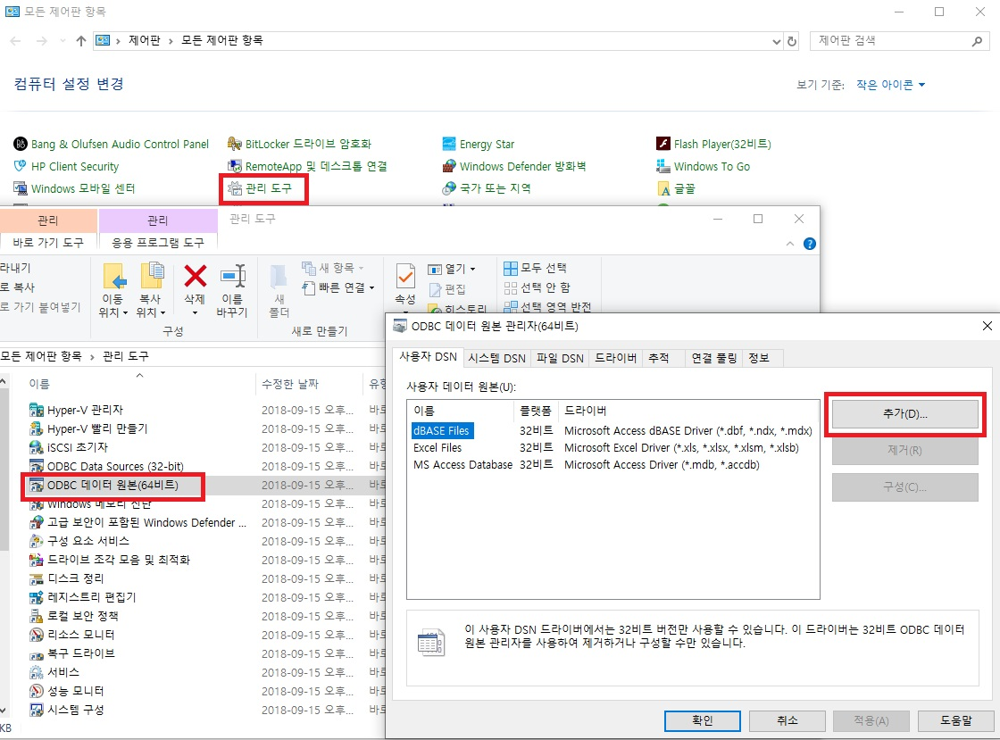

Overview
This document describes how to set up various development tools using the ODBC Driver in Altibase development in the Windows environment.
This document is based on Altibase version 6.5.1 and Windows 10.
The ODBC for Windows is provided only up to Altibase version 6.5.1, and not provided to Altibase version 7 or later.
Altibase ODBC Driver Configuration
Before the development, the ODBC Driver provided by Altibase must be installed. This can be downloaded from http://support.altibase.com/en/.
Downloading ODBC
Go to http://support.altibase.com/en/, then "Downloads" → "Products" to download Windows ODBC files for each version. (Supports up to Altibase version 6.5.1)
For older versions that are unable on the website, please contact support@altibase.com.
Installing ODBC Driver
When installing for the first time, download and install the WINDOWS CLIENT package.
Since there is no complicated process when installing the WINDOW CLIENT package, this document will not describe it separately.
When installing WINDOWS CLIENT, the ODBC installation screen appears as shown below.

ODBC settings in Control Panel
To register Altibase ODBC Driver, click “Start” → “Control Panel” → “Management Tools” → “ODBC Data Source (64-bit)” → “Add”.

After clicking "Add", select ALTIBASE_HDB_ODBC_64bit and click "Finish".
When the following DB connection setting screen appears, enter the setting value for the connection.

Items | Description | Example |
|---|---|---|
| DB Name | DB_NAME created at the time of DB creation | mydb |
| Host (name or IP) | IP information where Altibase DB Server is located | 192.168.1.35 |
| NLS_USE | DB character set | MS949 |
| Password | DB account password | manager |
| Port (default 20300) | Altibase DB Server connection port information | 20300 |
| User | Account on DB | sys |
| Windows DSN Name | Name that distinguishes it from other DSN names | SERVER1 |
If the user clicks the "Test Connection" button after entering each item, the user can check the connection to the Altibase Driver with ODBC Driver. (Altibase DB Server must be running.)
If this is properly set, the user can check the newly added ODBC items as follows.
ODBC Driver Development Guide
When connecting to the Altibase DB server with ODBC driver, separate source conversion is not required, and ODBC connection strings need to be changed in the connection part.
Compile and use appropriate heads (ex. windows.h, sql.h, sqlext.h, afxdb.h) and library (ex. odbc32.lib) that can integrate ODBC drivers required in WINDOWS.
ODBC connection string
In a program using the ODBC Driver, the connection string is used as follows.
The path marked in red is used as a keyword, and the part marked in blue can be used after changing the value according to the connection information of the Altibase DB Server to be connected and the ODBC version.
| DRIVER=ALTIBASE_HDB_ODBC_64bit;user=sys;password=manager; Server=127.0.0.1;PORT=20300;NLS_USE=MS949;LongDataCompat=on | |
| Driver | Altibase Driver name checked in ODBC management tool |
| User | User account on DB |
| Password | DB account password |
| Server | IP information where Altibase DB Server is located. |
| Port | Altibase DB Server connection port information |
| NLS_USE | DB character set |
| LongDataCompat | ON / OFF (Set to ON when using large data such as BLOB) |
Visual C++ example source
A simple connection example in Visual C++ is as follows.
#include <Afx.h>
#include <Afxdb.h>
#include "stdafx.h"
int _tmain(int argc, _TCHAR* argv[])
{
CDatabase db;
try
{
db.OpenEx(_T("ODBC connection string”), CDatabase::noOdbcDialog);
AfxMessageBox (_T("Connect OK"));
}catch (CDBException *e)
{
AfxMessageBox(e->m_strError);
}
return 0;
}
Visual C# example source
A simple connection example in Visual C++ is as follows.
using System;using System.Collections.Generic;
using System.Linq;
using System.Text;
using System.Data.Odbc;
namespace ConsoleApplication1
{
class Program
{
static void Main(string[] args)
{
OdbcConnection cn = new OdbcConnection();
try
cn.ConnectionString = “ODBC connection string”;
cn.Open();
Console.WriteLine("connect ok");
}
catch (OdbcException ex)
{
Console.WriteLine(ex.Message);
}
Console.ReadLine();
}
}
}
Visual Basic example source
A simple connection example in Visual Basic is as follows. In the example below, it is implemented as a source that connects to a DB and gets the current date and time. (The same applies when using ADO objects).
Sub Main()
Dim cn As Odbc.OdbcConnection
Dim cmd As Odbc.OdbcCommand
Dim dr As Odbc.OdbcDataReader
cn = New Odbc.OdbcConnection
cmd = New Odbc.OdbcCommand
cn.ConnectionString = “ODBC connection string”
Try
cn.Open()
Console.WriteLine("Successfully connected.")
cmd.Connection = cn
cmd.CommandText = "SELECT TO_CHAR(SYSDATE,'YYYY-MM-DD HH:MI:SS')FROM DUAL"
dr = cmd.ExecuteReader()
While (dr.Read())
Console.WriteLine(dr.GetString(0))
End While
Catch ex As Odbc.OdbcException
Console.WriteLine("Error in the connection" + ex.Message)
End Try
Console.ReadLine()
End Sub
Considerations when using LOB
In the case of Altibase, if LOB data type is used, it can be used after changing the connection information to Non-AutoCommit.
If not, NULL for LOB data type is brought when retrieving, or the following error occurs when insert/update time.
Connection is in autocommit mode. One can not operate on LOB datas with autocommit mode on.
With the following example of C# source, the user can see the process of inserting/selecting a BLOB data type into a table.
The example of BLOB insert is an example of changing the connection information to Non-AutoCommit and inserting data as described above while the DB is connected.
The used “blob” variable is declared as Byte[] type.
The example of BLOB select is an example that declares a Byte[] variable through a function called BINARY_LENGTH provided by Altibase to find out the length of a BLOB data type, saves data in the variable, and creates a file.
// BLOB INSERTFileStream fs = new FileStream("c:\\test.dat", FileMode.Open, FileAccess.Read);
Byte[] blob = new byte[fs.Length];
fs.Read(blob, 0, System.Convert.ToInt32(fs.Length));
fs.Close();
OdbcTransaction tx = cn.BeginTransaction();
cmd.Transaction = tx;
cmd.CommandText = "INSERT INTO T1 (C1, C2) VALUES (?, ?)";
cmd.Parameters.Add("C1", OdbcType.Int);
cmd.Parameters.Add("C2", OdbcType.Binary);
cmd.Parameters[0].Value = 1;
cmd.Parameters[1].Value = blob;
cmd.ExecuteNonQuery();
tx.Commit();
// BLOB SELECTcmd.CommandText = "SELECT binary_length(C2), C2 FROM T1";
tx = cn.BeginTransaction();
cmd.Transaction = tx;
OdbcDataReader dr = cmd.ExecuteReader();
int len;
while (dr.Read())
{
len = dr.GetInt32(0);
Byte[] ff = new Byte[len];
dr.GetBytes(1, 0, ff, 0, len);
fs = new FileStream("c:\\test.dat", FileMode.CreateNew, FileAccess.Write);
fs.Write(ff, 0, len);
fs.Close();
}
{kind=link}
{kind=link}
{kind=link}
{kind=link}
{kind=link}
{kind=link}
{kind=link}